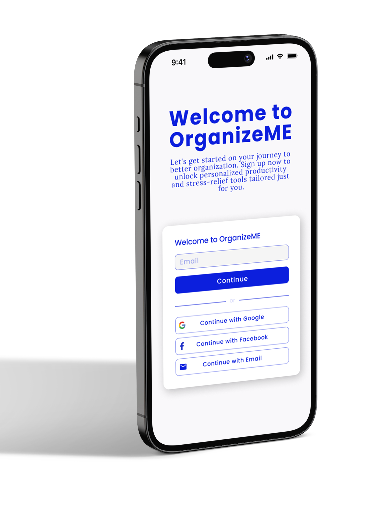

Transforming chaos into clarity - a productivity app that keeps student life in sync. 🖇️

Problem
"Balancing study, work, and life feels like a constant juggling act."
Daily disorganisation leads to missed deadlines and wasted time. Students in particular struggle to balance coursework, assignments, and personal commitments at once.
As a Human-Computer Interaction student in Munich working part-time as a UX designer myself, I lived this problem: project deadlines, coursework, sport, and a social life all competing for the same hours.
Even with existing tools, the real gap was clear, they manage isolated lists or calendars, but don't help keep everything in one place and actually prioritise it.
Design question
How might we help students keep tasks, projects, and schedules in one place and prioritise without relying only on deadlines?
Solution
OrganizeME brings tasks, projects, and schedules into one clear, student-friendly workflow.
Instead of scattering work across separate list apps and calendars, OrganizeME unifies tasks, projects, and schedule in a single view fitted to how students actually plan.
Features focus on the moments students struggle with most: distinguishing types of work, breaking tasks into smaller steps, and prioritising by importance rather than deadline alone.
The goal was simple to go from chaos to clarity, and make staying organised feel effortless and fun rather than like another chore.
The approach
Understanding how students plan, prioritise, and cope with stress.
Turning patterns into a persona and clear opportunities.
Generating and narrowing concepts for the app.
From structure to a first interactive prototype.
[01]
To understand the real organisation challenges, I ran a qualitative interview study and built a set of questions around how they plan tasks and handle stress.
I narrowed these to 10 key questions and ran short 15-minute interviews with 10 students, then extended the same questions to non-student friends and family to capture a broader range of viewpoints.
The interviews focused on prioritisation, tools, stress, productivity habits, and the gaps people felt in their current setup.
I clustered statements, data points, and quotes onto sticky notes, then grouped them to reveal emergent patterns.
Each group got a title, and from these clusters I identified problems and opportunity areas the foundation for design decisions.
I reframed the insights as open-ended How-Might-We statements, turning challenges into prompts for solo brainstorming.
Through these directions, I built a persona that embodied the needs and behaviours found in the research.
The persona became a tangible reference point, keeping later design decisions grounded in a real user rather than assumptions.
Persona
The research pointed to one central user: a busy student stretched across study, work, and a social life, who wants to feel on top of things without fighting their tools.
[02]
Ideation began with the Crazy 8s method and traditional brainstorming, to generate a wide range of concepts quickly.
I then explored Pinterest, magazines, and existing apps for direction on colour, typography, and overall feel extracting design elements methodically rather than chasing a single idea, until a clear visual vibe for OrganizeME emerged.
[03]
With a direction in place, I moved from words to screens, mapping the flow, sketching wireframes, and iterating toward a first interactive prototype.
Step 01
I mapped the sequential steps a user takes through the app, from onboarding to prioritising tasks and using the productivity tools.
The flow worked as a roadmap, giving a clear overview of features and interactions before any detailed design began.
Step 02
Next I sketched the basic structure as low-fidelity wireframes, focusing on the essential features and keeping the app easy to use.
Working in wireframes first made it quick to test ideas and catch usability issues early, before committing to visual design.
Step 03
As the wireframes came together, I spotted elements that needed adjusting or didn't fit the intended feel leading to several rounds of refining layouts, components, and colour.
Each change aimed for a balance between aesthetics and functionality, so every element earned its place.
[04]
I translated the wireframes into a first interactive prototype in Figma, comparing earlier components and colour schemes side by side as I went.
This iterative process produced a prototype where each element served a clear purpose: A single, home for tasks, projects, and schedules.
Tasks, projects, and schedule live in one view, so students stop switching between separate apps.
Work can be ordered by importance and personal goals not by deadline alone.
Larger tasks split into smaller steps, making it easier to start and beat procrastination.
The interactive Figma prototype below - click through it to explore the flows. You can also open it full screen ↗.
[05]
OrganizeME was a solo project that underscored the value of iterative design and user feedback. From early brainstorming to a detailed persona, every step I tried to understand and address real needs.
Testing with friends and family gave me insights that made the app's functionality and usability clearer. As an early personal project the documentation wasn't as thorough as I'd plan today but it resulted in a genuinely useful tool for managing tasks, projects, and schedules.
Most of all it showed how much user-centered thinking shapes a meaningful design.
I also acknowledge that in a real project there should be more rounds of iterations and a deeper understanding of user needs.